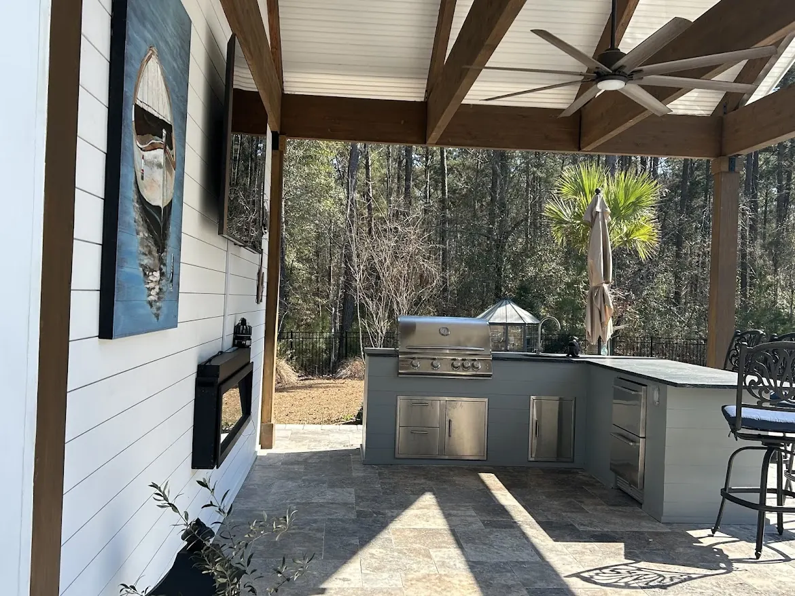
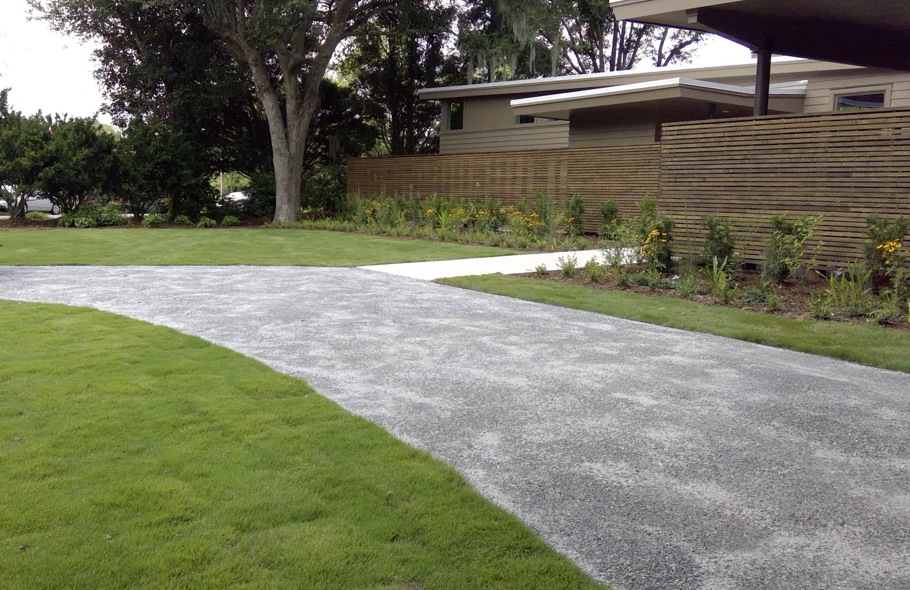

Landscaping & Outdoor Living in Mount Pleasant, SC

Local & Family-Run
Mount Pleasant Landscaping and Outdoor Living, From the Old Village to New Construction
Cramers Landscaping is a family company. Doug Cramer has worked in landscaping his whole life, with more than 30 years of experience, and his son Zach is our licensed residential builder. Doug and Zach design every project themselves, and our own crew builds it.
Mount Pleasant is really two kinds of place. There are the older areas, like the Old Village, with big trees and established yards. And there are the newer neighborhoods, like Carolina Park and Park West, where a yard starts as builder sod and not much else. They need different things from us.
Older Yards and New Construction Need Different Things

Older areas: big trees and overgrown beds
Older Mount Pleasant yards have larger trees and, often, overgrown plant beds. The trees are the best thing about them. They give a yard its beauty, and they are what makes landscape lighting worth doing, like the uplit oak in this photo.
They also make sod challenging, and drainage and overgrowth problems are more frequent in older yards. Old irrigation often isn’t working. We try to save what we can and replace what we have to. Redoing a damaged driveway or hardscape is also far more common here. For finishes, salt-void concrete and weathered materials look right on an older home.

New construction: a blank slate
New construction is more of a blank slate, but it needs more installed, because nothing is there yet. The houses tend to be more modern and minimalist, and there are no large trees, so the yard needs a structure for shade: a pergola or a pavilion.
Builder packages are the cheapest planting and the smallest slab that satisfies the contract, which is why those backyards all look the same. In new neighborhoods we are usually adding patios and walkways rather than repairing them, so it is the best time to plan the patio, the structure, the drainage and the planting together. On a newer, modern house, travertine and a sleek tile fit. Those are tendencies, though. The architecture of the specific house matters most, so that is where we start.
Some of What We’ve Built in Mount Pleasant
A pool pavilion built like a timber frame


Oversized glulam beams are what make it feel grand. They let us space the rafters 24 inches apart, under a beadboard tongue-and-groove ceiling. The outdoor kitchen runs along one side, finished in nickel gap like the walls.

At the back is a full bathroom. A bathroom has to be settled early, because the plumbing and the layout are fixed before anything is framed.
A modern house on a sloped lot

This yard sloped toward the water, so it needed a retaining wall. We made the wall do double duty as a seating wall and a fire pit, built in stackable block that looks bright, modern and sleek.

Out front, the driveway is plantation mix, a type of gravel, rather than concrete. It has a softer, more natural look, and it is permeable. The fence behind it is built from narrow horizontal slats, which draws out the length of the house and gives it that modern look.

Along the side of the house, the water garden was designed with the house, so the indoor and outdoor living run together. We built it under the direction of the architect and the landscape architect.

An outdoor shower the HOA could see
This outdoor shower is sapele and composite boards, plumbed hot and cold. It can be seen from the street, so the HOA required it to match the house.
The full stories are in Outdoor Living in Mount Pleasant.
Building in Mount Pleasant
The Old Village is a historic district, and the town’s Historic District Preservation Commission reviews exterior changes to property there before work starts. Elsewhere it is usually the HOA: I’On, Carolina Park and Dunes West all review size, placement and materials. It is not usually a problem, it is a schedule, and we prepare and submit the applications.
The town also protects trees. Most residential trees of 16 inches or more in diameter are protected, and a live oak of 24 inches or more counts as a historic tree. Nothing impervious can go inside a protected tree’s protection zone, which matters for a driveway, a patio or a wall near an old oak. The town has the final say.
Plenty of Mount Pleasant lots sit low. If the ground slopes toward the house or holds water after a storm, that gets solved first, by regrading or with a drainage system. Lots near marsh or a tidal creek can carry wetland permitting as well.
Mount Pleasant Neighborhood by Neighborhood
Every neighborhood has its own review board and its own rules, and they differ more than people expect. A few examples from the published guidelines:
- Old Village: fences are wood, brick or wrought iron. Chain link, vinyl and aluminum are not appropriate, and front fences stop at 42 inches. Pools and pergolas go in the rear yard, heavy front-yard paving is discouraged, and artificial turf is not permitted at all. Planting beds don’t need a certificate.
- Carolina Park: fences are 4-foot wood pickets in Historic Charleston Green or Wrought Iron Gate, or black powder-coated aluminum, rear yard only. Patios go in the rear, in materials like brushed concrete, stone, brick pavers or tabby. Lighting should focus on the landscape rather than the house, with no “runway” lights along the driveway, and irrigation is required.
- Charleston National: on golf-course lots, only black aluminum fencing up to 5 feet is considered, set back 30 feet from the rear line.
- Hamlin Plantation: fences are back yard only, 4 feet at most, and can’t block a water view. Landscape lighting doesn’t need board approval.
- Dunes West: a fence needs evergreen screening at least three-quarters of its height, and a landscape application needs a grading plan that keeps runoff off the neighbors’ yards.
- Seaside Farms: fences are back yard only, 4 feet at most, wood pickets, and detached gazebos are not permitted.
On top of the HOA, the town protects trees: most residential trees of 16 inches or more need town approval to remove, and topping a tree, including a crape myrtle, is not an accepted practice. HOA approval does not replace a town permit.
Rules as published when we checked in 2026. Guidelines change, and the board or town always has the final say, so we confirm the current rules for your property before a design is final.
Every Service We Offer, Available In Mount Pleasant
The projects on this page are only part of what we do. We offer all of our services in Mount Pleasant, designed by Doug and Zach and built by our own crew. From the first site visit to the final walkthrough, here’s how a project works.
- Landscaping: landscape design and installation, plants and trees, sod, artificial turf, irrigation, drainage and grading, landscape lighting, mulch and bed edging, fountains and water features
- Hardscaping: patios and pavers, concrete and driveways, retaining walls, fire pits, pool decks
- Outdoor Structures: pergolas, pavilions, outdoor kitchens, outdoor fireplaces, outdoor showers
Worth knowing before you start
- Sod: New sod gets watered every day for the first two weeks, in the morning or around midday, never late in the day. Bermuda is the toughest grass but needs full sun. Zoysia wants about six hours of sun.
- Irrigation: In older homes the irrigation often isn’t working. We try to save what we can and replace what we have to. Charleston Water bills sewer on most of the water a house uses unless the sprinklers run through an irrigation meter, which pays no sewer.
- Landscape lighting: Non-waterproof wire connections are the number one failure point, and the wrong wire gauge makes the lights at the end of a run dim. We avoid a straight runway of path lights and layer uplighting, downlighting and path lights instead. The wire goes in before the hardscape.
- Artificial turf: A good install has a compacted crushed-rock base and a weed barrier. We avoid black crumb-rubber infill; silica or coated sand is better.
- Drainage and grading: Downspouts can be piped underground to pop-up emitters, and channel drains are what you want along a pool deck.
Small jobs are welcome too. There’s no minimum job size.
Projects We’ve Built in Mount Pleasant
Open a project for the full story and photos.


What Projects Typically Cost
| Pavilion | $30,000 – $90,000+ |
|---|---|
| Pergola | $10,000 – $30,000 |
| Outdoor kitchen | $8,000 – $20,000+ |
| Outdoor shower | $6,000 – $15,000 |
| Landscape lighting | about $200 a light, plus a transformer |
| Sod | $750 a pallet installed |
Ranges are typical, not quotes. Size, materials, site conditions and finishes move the number. You’ll get an exact price after the consultation.
Frequently Asked Questions
Do you work in both the older parts of Mount Pleasant and the new neighborhoods?
Yes, and they need different things. Older areas have large trees, overgrown beds, and more drainage and irrigation problems. New construction is a blank slate that needs more installed, and usually a structure for shade.
Does my Mount Pleasant neighborhood need HOA approval?
Many do. I’On, Carolina Park and Dunes West, all of which we have worked with, review size, placement and materials. We prepare and submit the application for you and design to the guidelines from the start.
My old irrigation system doesn’t work. Do I need a new one?
Not always. In older homes the irrigation often isn’t working, and we try to save what we can and replace what we have to.
Why won’t grass grow under my live oaks?
Shade. St. Augustine is the best sod for shade under live oaks, and where grass still keeps failing, artificial turf or a planted bed is the better answer.
Talk to Doug or Zach About Your Yard
Tell us what you have in mind for your Mount Pleasant property, and we’ll set up a consultation at your home.
This site is protected by reCAPTCHA. Google’s Privacy Policy and Terms of Service apply.